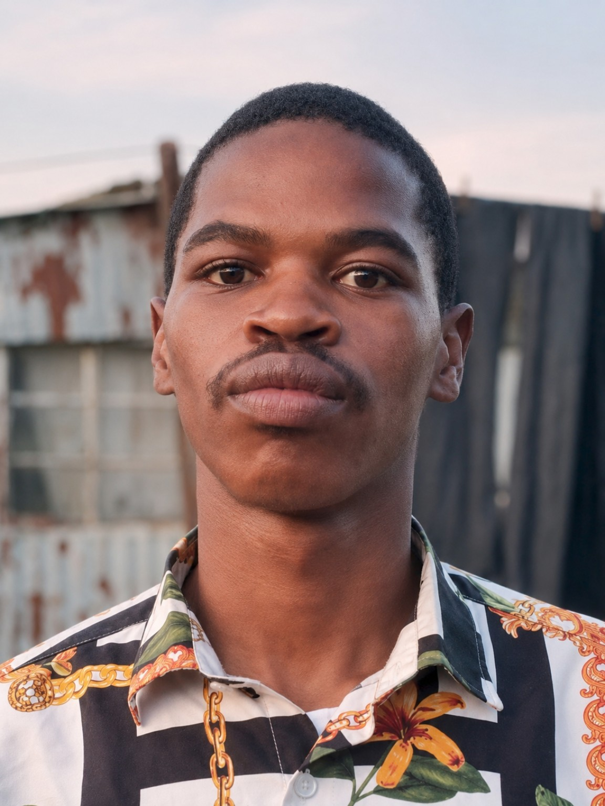

01 / CHURCH WEBSITE
AFM Hour of Grace Ministries
A church website project featuring ministry information, service schedules, contact details, and a welcoming online presence.
Website design • Mobile development • SEO
I'm a self-taught website designer from East London (KuGompo City), South Africa. My journey in technology shows that you don't need an expensive computer to begin creating something meaningful.
My name is Tshepang Mpange. I am passionate about web design, coding, and using technology to help people and businesses grow online.
Instead of waiting until I owned a laptop or desktop computer, I started learning and building websites on my Android smartphone. I developed my skills through practice, experimentation, and real website projects.
My story is still being written. Every new project is another opportunity to learn, improve, and create.

I became interested in how websites work and began teaching myself how to create them.
Using mobile-friendly coding tools such as Acode, I practiced writing and editing website code without a traditional computer.
Over approximately three years of experience, I have worked on website layouts, branding, responsive design, and helping projects establish an online presence.
I want to continue mastering web development, explore more advanced technologies, and contribute to meaningful digital projects in South Africa and beyond.
My experience includes front-end website development and practical tools for building and publishing websites from a phone.
A church website project featuring ministry information, service schedules, contact details, and a welcoming online presence.
Website design • Mobile development • SEO
A product-focused water business website design with branding, product listings, prices, and contact information.
Responsive design • Product layout
An independently developed website concept exploring hospitality branding and a visually engaging business experience. This was a demonstration, not an official commissioned site.
Website concept • Visual design
“Your starting point does not have to determine your destination. I started building websites with a smartphone — and I'm still learning, building, and dreaming bigger.”
— Tshepang Mpange
Interested in my website design journey, collaborating on a project, or discussing an opportunity? I'd love to connect.